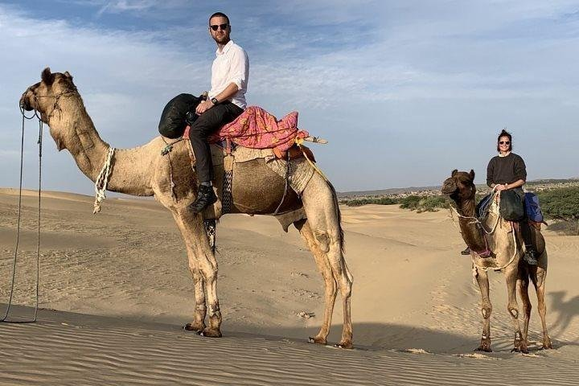
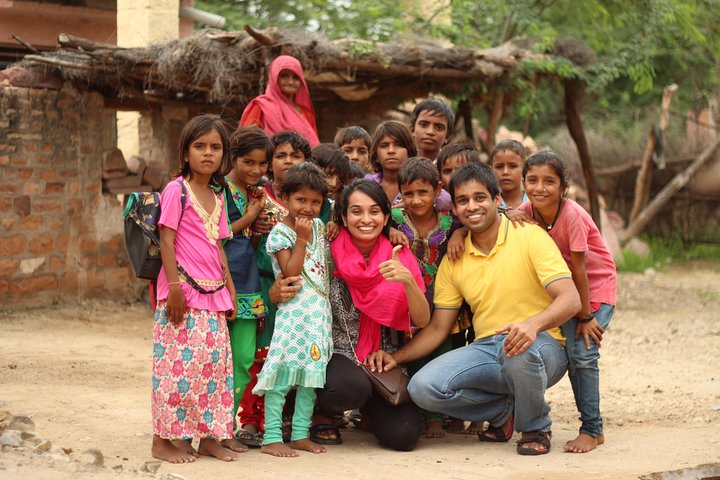
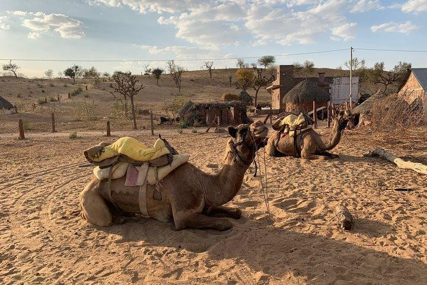
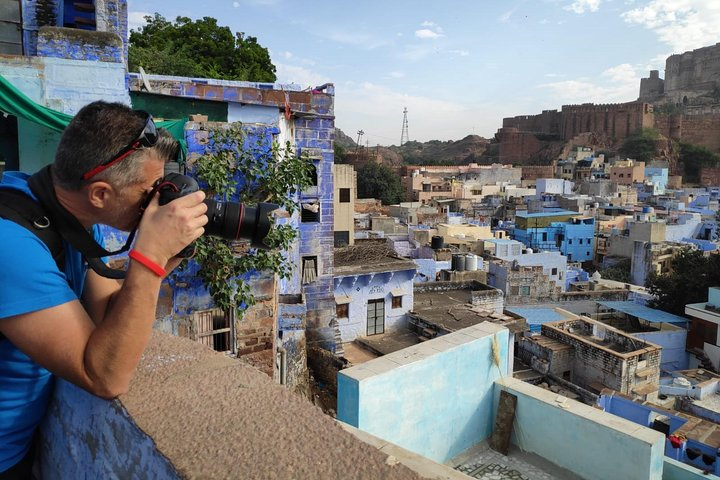
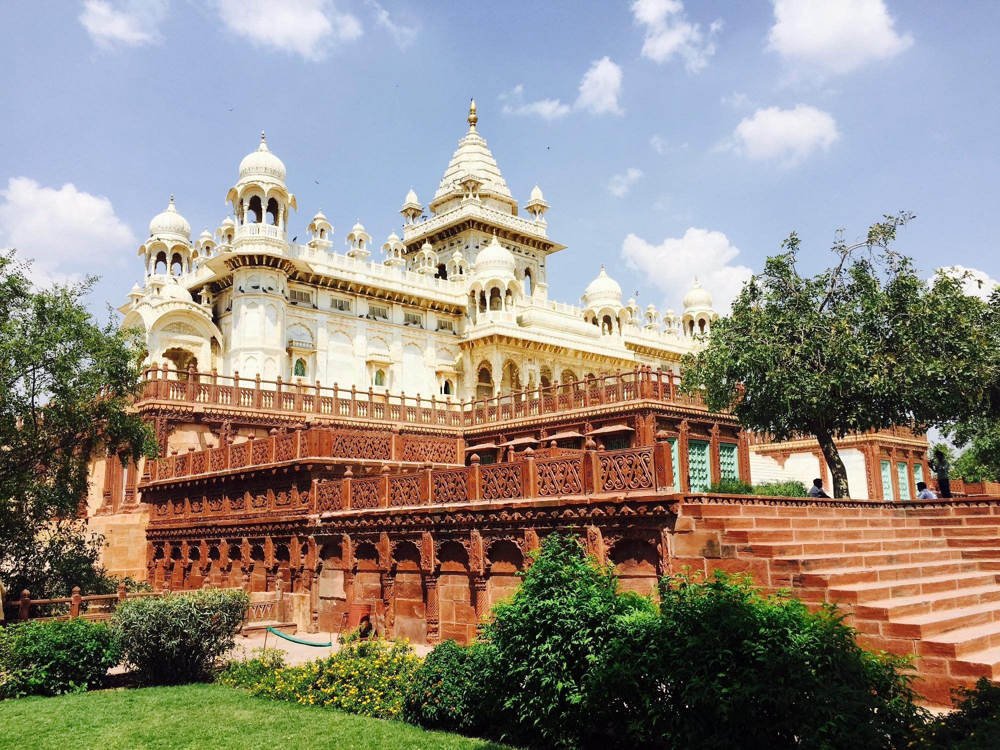
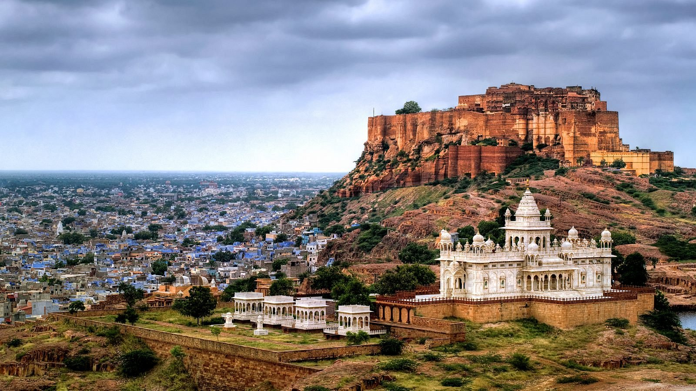
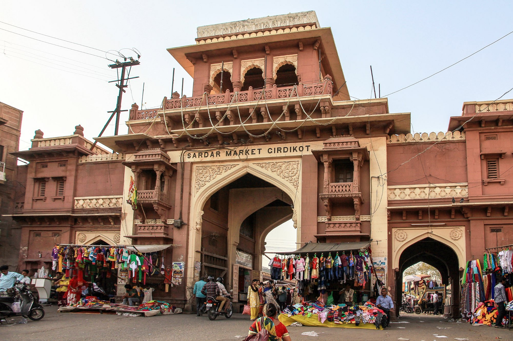
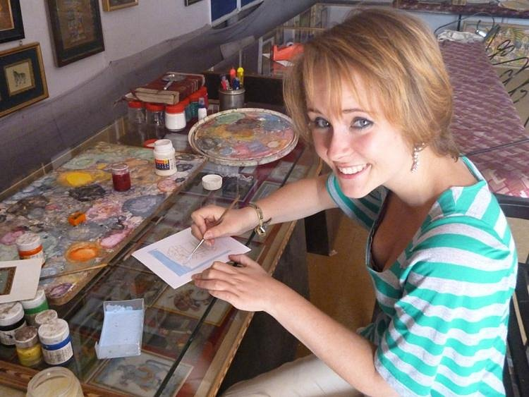
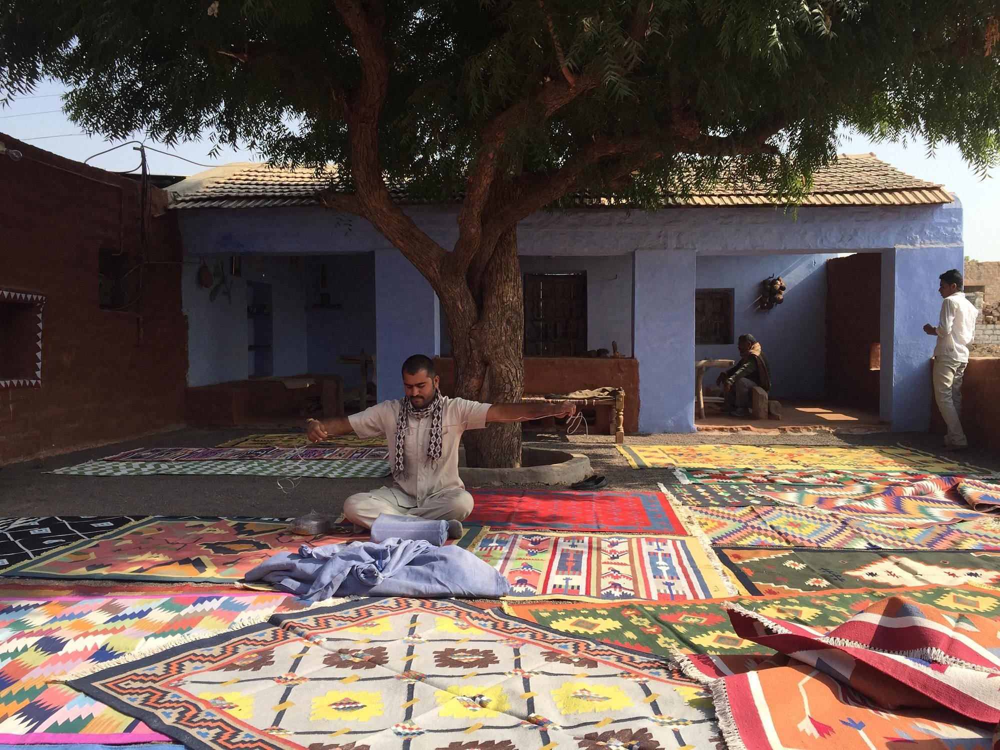

| Home | About Us | Rooms | Book a Stay | Gallery | Amenities | Packages | Awards | Reviews | FAQ | Contact Us | Location |
We provide great off-premise travel packages for our customers.
|  | Camel Safari Day Tour in Jodhpur
Experience an amazing camel safari in the Thar Desert while watching the sun set to complete your trip to |
|||||
|  | Bishnoi Village Safari
In our half day village safari we will visit families of weavers, potters and have home cooked meal with |
|||||
|  | 1 Night Stay In Desert Jodhpur
Watch the sunset while riding a camel in the Thar Desert on this tour to Osian from Jodhpur. You'll |
|||||
|  | Jodhpur Mehrangarh Fort and Blue City Guided Tour
Meharangarh fort is one of the main attraction in jodhpur. and it said that No visit to jodhpur can |
|||||
|  | Jawant Thada Monument Visit
It's an expression of love. A beautiful white structure with strong history. Tourists have a wonderful |
|||||
|  | Rao Jodha Desert Rock Park and Umaid Bhawan Palace museum
The park is a stunning display of native flora and fauna, as well the local geology.
Featuring a Exquisite collection of the royal articles especially the luxurious vintage cars. |
|||||
|  | Sardar Market
A good place to shop if one intends to support the local artisans and also get a good deal on |
|||||
|  | Umaid Heritage Art School
This art school is located in the heart of Jodhpur.
It focuses on traditional and modern art |
|||||
|  | Pukhraj Durry Udhyog
Handmade carpets(rug) made from vegetable and natral colors
are created. The profits |
|||||